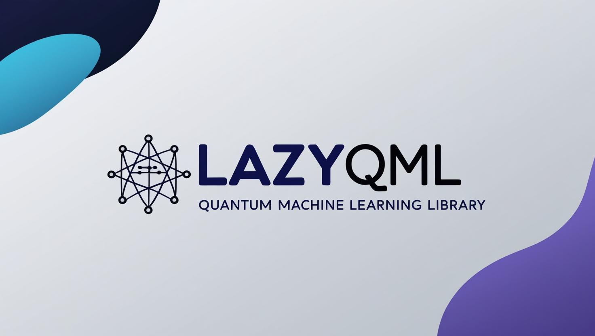

Home
¶


LazyQML is a Python library designed to streamline, automate, and accelerate experimentation with Quantum Machine Learning (QML) architectures, right on classical computers.
With LazyQML, you can: - 🛠️ Build, test, and benchmark QML models with minimal effort.
-
⚡ Compare different QML architectures, hyperparameters seamlessly.
-
🧠 Gather knowledge about the most suitable architecture for your problem.
✨ Why LazyQML?¶
-
Rapid Prototyping: Experiment with different QML models using just a few lines of code.
-
Automated Benchmarking: Evaluate performance and trade-offs across architectures effortlessly.
-
Flexible & Modular: From basic quantum circuits to hybrid quantum-classical models—LazyQML has you covered.
Documentation¶
For detailed usage instructions, API reference, and code examples, please refer to the official LazyQML documentation.
Requirements¶
- Python >= 3.10
❗❗ This library is only supported by Linux Systems. It doesn't support Windows nor MacOS. Only supports CUDA compatible devices.
Installation¶
To install lazyqml, run this command in your terminal:
1 | |
This is the preferred method to install lazyqml, as it will always install the most recent stable release.
If you don't have pip installed, this Python installation guide can guide you through the process.
From sources¶
To install lazyqml from sources, run this command in your terminal:
1 | |
Example¶
1 2 3 4 5 6 7 8 9 10 11 12 | |
Quantum and High Performance Computing (QHPC) - University of Oviedo¶
- José Ranilla Pastor - ranilla@uniovi.es
- Elías Fernández Combarro - efernandezca@uniovi.es
- Diego García Vega - diegogarciavega@gmail.com
- Fernando Álvaro Plou Llorente - ploufernando@uniovi.es
- Alejandro Leal Castaño - lealcalejandro@uniovi.es
- Group - https://qhpc.uniovi.es
Citing¶
If you used LazyQML in your work, please cite: - García-Vega, D., Plou Llorente, F., Leal Castaño, A., Combarro, E.F., Ranilla, J.: Lazyqml: A python library to benchmark quantum machine learning models. In: 30th European Conference on Parallel and Distributed Processing (2024)
License¶
- Free software: MIT License